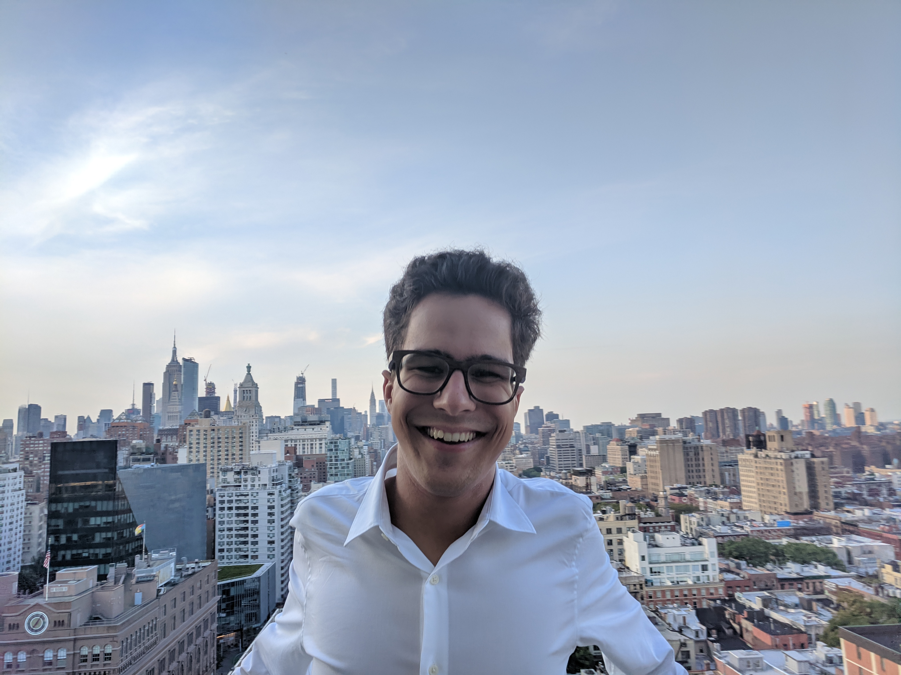

Hi there! I am an incoming Ph.D. student in political science at Harvard University. Currently, I am studying computer science and political science at Columbia University and I am advised by Prof. Kathleen McKeown.
I am broadly interested in the intersection of politics and computing. My methodological interests include computational social science, natural language processing, and formal political theory. My substantive interests include news and social media, elections and public opinion, political communication and behavior, and their intersections with technology.
I have previously worked with the Research and Development department at the New York Times and the News Framing Lab at the University of Southern California’s Information Sciences Institute.
To get in touch, email me at a.camara (at) columbia (dot) edu.
Publications
Mapping the Multilingual Margins: Intersectional Biases of Sentiment Analysis Systems in English, Spanish, and Arabic.António Câmara, Nina Taneja, Tamjeed Azad, Emily Allaway, Richard Zemel.
Second Workshop on Language Technology for Equality, Diversity, Inclusion (LT-EDI), 2022.
[link]
Detecting Polarized Topics Using Partisanship-aware Contextualized Topic Embeddings.Zihao He, Negar Mokhberian,
António Câmara, Andrés Abeliuk, Kristina Lerman.
Findings of the Conference on Empirical Methods in Natural Language Processing (EMNLP), 2021.
[link]
Teaching
COMS 4705: Natural Language Processing, Columbia University.
Spring 2022. Head Teaching Assistant. Instructor: Prof. Yassine Benajiba.
Spring 2021, Fall 2021. Teaching Assistant. Instructor: Prof. Kathleen McKeown.
Summer 2021 (A). Teaching Assistant. Instructor: Dr. Daniel Bauer.